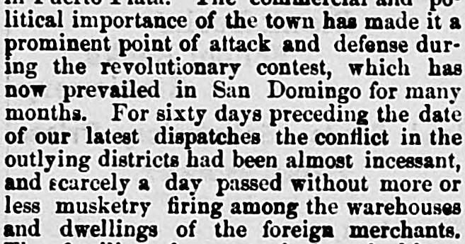

For sixty days preceding the date of our latest dispatches the conflict in the outlying districtsDurante los sesenta días anteriores a la fecha de nuestros últimos despachos, el conflicto en los distritos alejados
Daily Press and Dakotaian. Yankton, Dakota Territory [S.D.], January 12, 1878. Page 2. Published by Bowen & Kingsbury. A daily newspaper, 1875–1880.Daily Press and Dakotaian. Yankton, Dakota Territory [S.D.], 12 de enero de 1878. Página 2. Publicado por Bowen & Kingsbury. Periódico diario, 1875–1880. View the originalVer el original

According to the Daily press and Dakotaian on January 12, 1878, an incessant revolutionary conflict had prevailed in San Domingo for months, putting foreign merchants and their families in danger while no American naval vessel had appeared at Puerto Plata since the outbreak began over three months prior. Consequently, U.S. Consul Douglass departed, leaving a native Dominican and relative of President Baez's minister of war as vice consul—a succession that alarmed American residents who feared partisan bias and opposition to potential U.S. naval assistance.Según el Daily press and Dakotaian del 12 de enero de 1878, una incesante contienda armada convulsionaba a Santo Domingo desde hacía meses, arriesgando las vidas y haciendas de los comerciantes extranjeros sin que asomara buque militar estadounidense alguno por Puerto Plata desde el inicio de los disturbios tres meses atrás. Ante ello, el cónsul estadounidense Douglass se ausentó de la plaza, delegando la vicecancillería en un nativo dominicano emparentado con el ministro de Guerra del presidente Báez, relevo que sobresaltó a los residentes norteamericanos ante el temor a sesgos partidistas y trabas a un eventual auxilio naval de los EE. UU.
FULL TEXT:TEXTO COMPLETO:
Daily Press and Dakotaian January 12, 187812 de enero de 1878
St. Louis Journal.St. Louis Journal.
One of the objects for which the United States maintain a costly naval establishment in time of peace is presumably to protect American commercial interests in foreign countries. Intelligence from the West Indies indicates that the administration at Washington has lost sight of this object in one important instance at least. On the northern shore of Hayti or San Domingo is the town of Puerto Plata, one of the chief seaports of the Dominican republic. It has a population of about three thousand inhabitants, and carries on a considerable trade with the United States. Formerly our government was represented there by a consular agent but more recently the trade with the United States has been regarded as important enough to justify the establishment of a full consulate, and a son of Frederick Douglas was appointed the first American consul.Uno de los objetos por los cuales los Estados Unidos mantienen un costoso establecimiento naval en tiempo de paz es presumiblemente proteger los intereses comerciales estadounidenses en países extranjeros. Noticias de las Indias Occidentales indican que la administración en Washington ha perdido de vista este objeto en un caso importante al menos. En la costa norte de Haití o Santo Domingo está el pueblo de Puerto Plata, uno de los principales puertos marítimos de la república dominicana. Tiene una población de unos tres mil habitantes, y lleva a cabo un comercio considerable con los Estados Unidos. Antiguamente nuestro gobierno estaba representado allí por un agente consular pero más recientemente el comercio con los Estados Unidos ha sido considerado lo bastante importante para justificar el establecimiento de un consulado completo, y un hijo de Frederick Douglas fue nombrado el primer cónsul estadounidense.
This action certainly indicates that there are American interests of some consequence in Puerto Plata. The commercial and political importance of the town has made it a prominent point of attack and defense during the revolutionary contest, which has now prevailed in San Domingo for many months. For sixty days preceding the date of our latest dispatches the conflict in the outlying districts had been almost incessant, and scarcely a day passed without more or less musketry firing among the warehouses and dwellings of the foreign merchants. The families of many of them had been compelled to take refuge on the shipping in the harbor, It would seem that at such a place as this, if anywhere, the presence or occasional visits of a man-of-war would have some effect to secure the lives and property of alien residents against needless perils and destruction; yet we are informed that no vessel of the American navy has made her appearance at Puerto Plata since the last outbreak began, now more than three months ago.Esta acción ciertamente indica que hay intereses estadounidenses de alguna consecuencia en Puerto Plata. La importancia comercial y política del pueblo lo ha hecho un punto prominente de ataque y defensa durante la contienda revolucionaria, que ahora ha prevalecido en Santo Domingo por muchos meses. Durante sesenta días precedentes a la fecha de nuestros últimos despachos el conflicto en los distritos alejados había sido casi incesante, y apenas pasaba un día sin más o menos fuego de mosquetería entre los almacenes y viviendas de los comerciantes extranjeros. Las familias de muchos de ellos habían sido obligadas a refugiarse en los buques del puerto. Parecería que en un lugar como este, si en alguno, la presencia o las visitas ocasionales de un buque de guerra tendrían algún efecto para asegurar las vidas y propiedades de los residentes extranjeros contra peligros y destrucción innecesarios; sin embargo se nos informa que ningún buque de la marina estadounidense ha hecho su aparición en Puerto Plata desde que comenzó el último estallido, hace ahora más de tres meses.
Under these circumstances, even Mr. Douglass, the consul, has found the country too uncomfortable to remain in it any longer, and has come away, leaving behind him as vice consul a native of San Domingo, who is a relative of the minister of war under President Baez. It is anything but pleasing to the American residents of Puerto Plata to find themselves represented by a man who must needs be influenced in its acts by his adherence to one of the two parties now at war for the possession of San Domingo; and the fear is expressed that even if an American man-of-war should come into the harbor, this vice consul would try to convince the commander that she was not needed.Bajo estas circunstancias, hasta el Sr. Douglass, el cónsul, ha encontrado el país demasiado incómodo para permanecer en él por más tiempo, y se ha venido, dejando tras sí como vicecónsul a un nativo de Santo Domingo, que es pariente del ministro de guerra bajo el presidente Báez. No es nada agradable para los residentes estadounidenses de Puerto Plata encontrarse representados por un hombre que por fuerza ha de estar influenciado en sus actos por su adhesión a uno de los dos partidos ahora en guerra por la posesión de Santo Domingo; y se expresa el temor de que aun si un buque de guerra estadounidense entrara en el puerto, este vicecónsul intentaría convencer al comandante de que no era necesario.